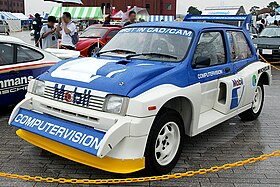

World Rally Championship (WRC) Group B kategóriája az 1980-as évek közepén volt népszerű, és az autók híresek voltak extrém teljesítményükről és veszélyességükről. Az alábbiakban bemutatom a Group B korszak legjobb autóit:
| Autó | Motor | Teljesítmény | Súly | Kiemelkedő jellemző |
|---|---|---|---|---|
| Audi Quattro S1 E2 | 2.1 literes, soros 5 hengeres turbómotor | Kb. 600 lóerő | Kb. 1090 kg | Négykerék-meghajtás, brutális gyorsulás |
| Lancia Delta S4 | 1.8 literes, soros 4 hengeres turbó- és kompresszorfeltöltésű motor | Kb. 550-600 lóerő | Kb. 890 kg | Dupla feltöltés, könnyű karosszéria |
| Peugeot 205 T16 | 1.8 literes, soros 4 hengeres turbómotor | Kb. 450-500 lóerő | Kb. 910 kg | Középmotoros elrendezés, kiváló kezelhetőség |
| Ford RS200 | 1.8 literes, soros 4 hengeres turbómotor | Kb. 450-500 lóerő | Kb. 1050 kg | Állítható négykerék-meghajtás, innovatív karosszéria |
| MG Metro 6R4 | 3.0 literes, V6 szívómotor | Kb. 400-410 lóerő | Kb. 1000 kg | Szívómotor, kiváló egyensúly |
| Renault 5 Turbo | 1.4 literes, soros 4 hengeres turbómotor | Kb. 350-400 lóerő | Kb. 970 kg | Középmotoros elrendezés, kis méret és agilitás |
| Porsche 959 | 2.8 literes, soros 6 hengeres biturbó motor | Kb. 450 lóerő | Kb. 1450 kg | Fejlett négykerék-meghajtás, innovatív technológia |
|  |
Ezek az autók az autósport legendái közé tartoznak, és máig emlékezetesek maradnak a teljesítményük és a technológiai újításaik miatt. A Group B autók különleges helyet foglalnak el a rally történetében, és máig ikonikusak a rajongók körében.